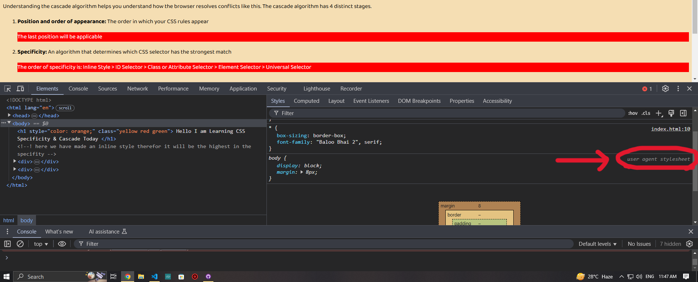

CSS stands for Cascading Stylesheets. The cascade is the algorithm for solving conflicts where multiple CSS rules apply to an HTML element. It's the reason that the text of the button styled with the above CSS will be purple.
Understanding the cascade algorithm helps you understand how the browser resolves conflicts like this. The cascade algorithm has 4 distinct stages.
The last position will be applicable
The order of specificity is: Inline Style > ID Selector > Class or Attribute Selector > Element Selector > Universal Selector
So come from backward in terms of using specificity this will help to overwrite if it needed
If we don't add any style for a particular portion of our code browser will give them attribute as default but if we add our own than browser's will be overwritten by our style
There is an option even if we made a inline style it can be changed which is using !important after the attribute for example..... color: red !important
data-x="something" is called Attribute Selector of a particular portion in terms of specificity it is same as Class............By the way this is an inline style css tag so we will be using importance on this portion. Without the importance rule now it's background-color is yellow green we will make it orangered!!!.........so now it is orangered because in css code we have make background-color: orangered !important